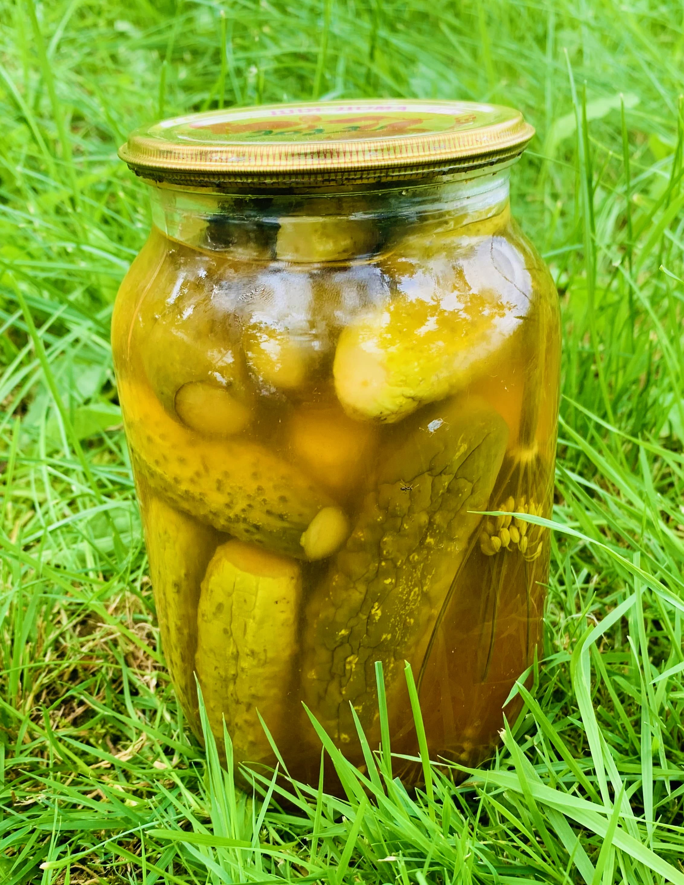

Огірки мариновані в кетчупі
Цікаве поєднання смаків, кетчуп додає особливу нотку до маринаду, варто один раз спробувати і рецепт стає улюбленим

Інгредієнти
- орієнтовно 5 літрових банок
- орієнтовно 3 кілограми огірків
- 1.25 літра води
- 250 мілілітрів оцту
- 2 столові ложки солі
- 4 столові ложки кетчупу до шашлику
- 4 столові ложки кетчупу лагідного
- 5 лаврових листів
- 5 духмяних перців
- 5 зубчиків часнику
- 1 цибулина
- 5 гілочок кропу
Спосіб приготування
- на дно кожної банки покласти зубчик часнику, кружельце цибулі та гілочку кропу
- щільно накласти огірки в банки
- в каструлю налити воду, оцет, додати кетчупи, сіль, перець та лаврове листя
- довести маринад до кипіння та залити в банки до огірків
- розподіляємо перець та листя по банках
- стерилізувати 15-20 хвилин (до пожовтіння огірків)
- споживати бажано через місяць, щоб огірки набрали смаку